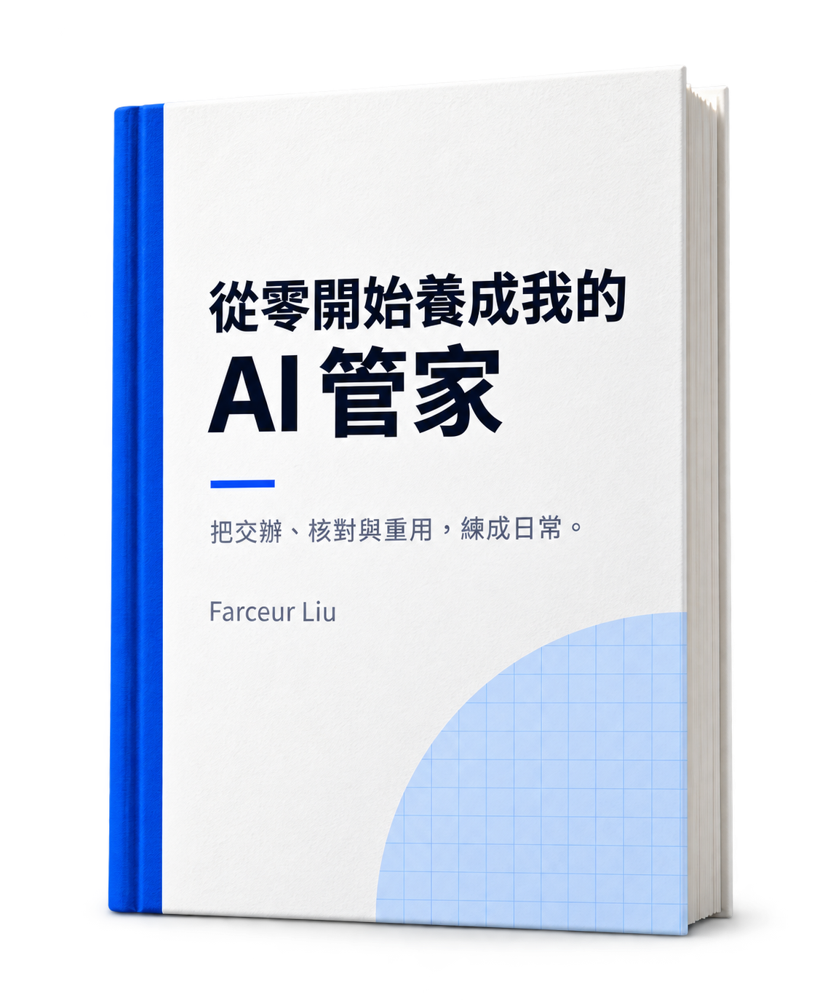

從零開始養成我的AI 管家
不必追很多工具，先把一件工作交辦好。
給第一次把 AI 用進工作與日常的人。從會議筆記練習交辦、核對與修正，再把好用的方法留下來。
免費公開版 v1.1

看筆記怎麼變成待辦每一項待辦，都對得回原文。
下週線上工作坊報名頁文案還沒確認，行銷週三前提供新版。
行銷：提供報名頁新版文案。
期限：週三前。
負責角色與期限，原文都有寫明。
客服 / 行政近期收到幾件報名流程相關問題，需要整理常見問答。
整理報名常見問答。
負責人與期限：待確認。
未指派整理人，也沒寫期限，兩項都先確認。
節錄自第 2 章練習。有寫明的留下，沒寫明的先確認。 拿完整筆記試做
想讓 AI 幫忙，卻不知道從哪開始？
問題不一定在少了哪個工具。這本書用完整案例、交辦模板與檢查清單，帶你處理三個常見卡點。
- 不知道先交辦什麼？
- 從摘要、待辦整理或改寫初稿開始，先選一件風險低、自己能核對的任務。
- 結果和想的不一樣？
- 把目標、資料、限制與輸出格式說清楚，先拿到一版能檢查、能修正的結果。
- 這個答案能直接用嗎？
- 對照來源，分清楚已有依據、推測與待確認的內容；判斷與責任仍留在自己手上。
先把任務交辦清楚
選一件低風險、自己能核對的工作，說明目標、資料、限制與希望的輸出格式。
對照資料，核對與修正
逐項查看有沒有遺漏、誤解或擅自補上的內容。有問題就補充或修改，缺少的資訊先確認。
把有效的方法留下來
任務做過、結果也核對過，再把好用的交辦方式與檢查項目存成模板，留待下次調整使用。
讀完，帶走四種實用能力
會議筆記只是起點。整理資料、草擬回覆或面對一件新任務時，也能沿用同一套交辦與核對方法。
- 會交辦
- 面對一件新任務，能整理出 AI 開始工作所需的資料與說明，不再只丟一句「幫我處理」。
- 會驗收
- 分得清已有依據與還要確認的內容，知道哪些地方需要核對，什麼時候應該停下來問人。
- 會保存
- 累積自己的交辦模板與檢查清單，下次遇到類似工作，有方法可以沿用，不必每次從頭試。
- 會選工具
- 判斷手上的工具是否夠用，何時才需要檔案處理、可重複使用的說明，或能接續執行的助理。
給第一次把 AI 用進工作與日常的人
不需要先懂程式，也不必先研究一長串工具。只要有一件自己熟悉、能核對結果的小任務，就可以開始練習。已經用過 AI，卻卡在交辦、修改或判斷答案的人，也能從對應章節找做法。
有需要，再往下讀
需要處理檔案或更多步驟時，再看工具怎麼選；想重用已驗證的工作說明，可以讀 Skill；想交給助理接續處理，可以讀 Agent。第 19 章沿用同一份筆記，說明分工核對、有限修正，以及資料、權限與進度的管理；團隊主管也可選讀第 20 章的導入與成果保存。